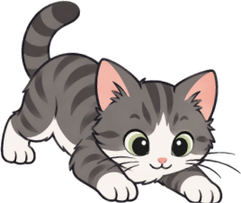
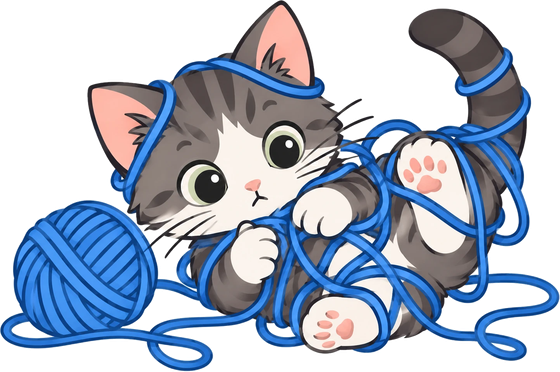

Yarn
StartEnd


Lead one strand of yarn through every ball of yarn in the order the skein at the top shows, from Start to End, passing through every square exactly once.
Start on the ball matching the Start end of the skein and drag. Drag back to take yarn back, or tap any square on the strand to cut it there.
Colors sets how different the balls look. Wide range runs through many different colors; Medium blends through a few neighboring colors; Very close stays within one color family, so neighboring shades are hard to tell apart. Show numbers puts the order on each ball, for color-blind play.